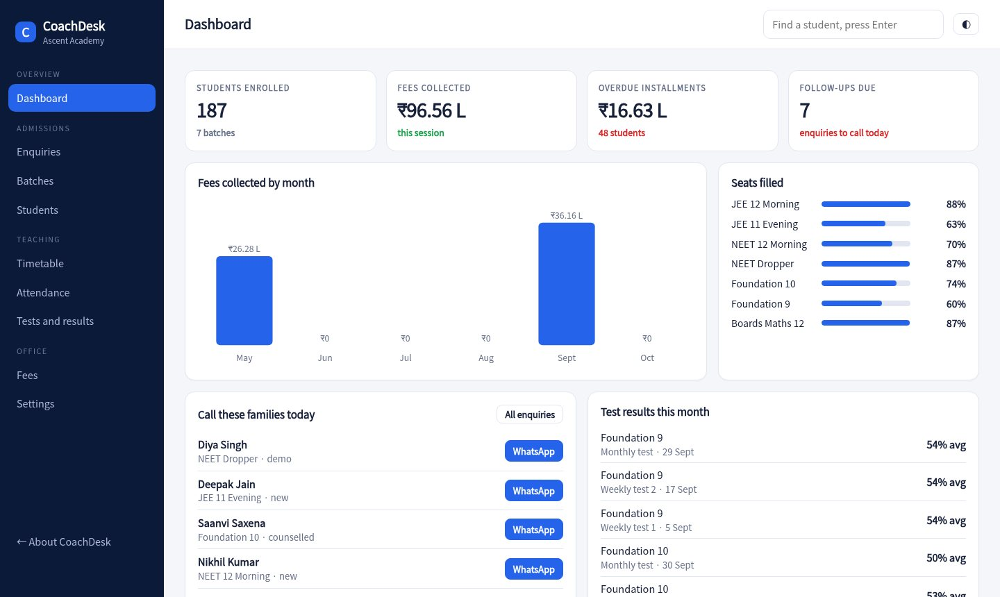
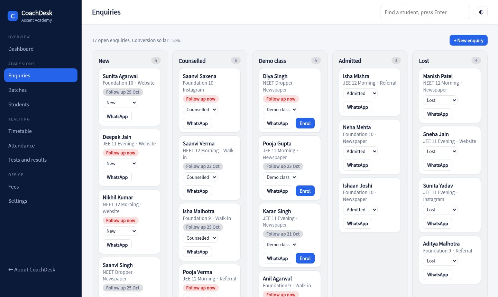
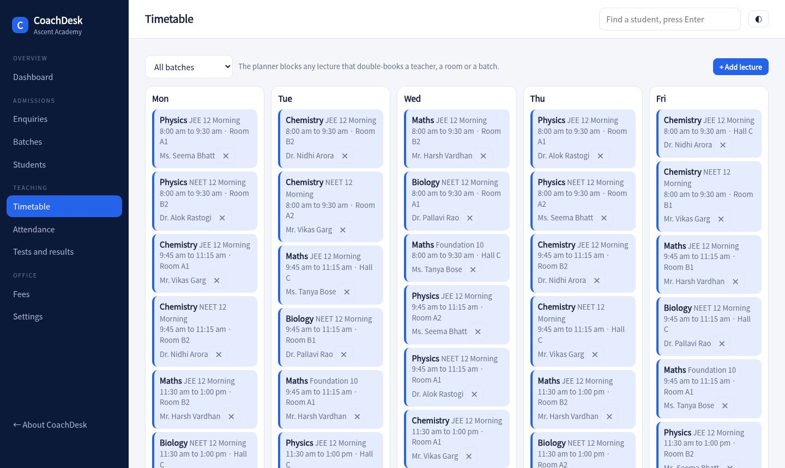

Track every enquiry until it becomes an admission, run batches and installments, and publish test results without a spreadsheet. The timetable refuses to double-book a teacher or a room.

Every call, walk-in and Instagram lead gets a stage and a follow-up date. The dashboard lists who to call today, with a WhatsApp message ready.
See each batch with its seats filled, fee, subjects and weekly lectures. Enrol a student from a demo-class enquiry in two clicks.
Fees split into installments with due dates. Overdue amounts are worked out per student and reminders carry a UPI link.
Add a lecture and the planner checks the teacher, the room and the batch. A clash is blocked with the reason.
Create a test, enter marks by subject, and get ranks, subject averages and the topper. Send the result to a parent on WhatsApp.
Every student profile shows fee status, attendance and score trend, with a one-tap message to the parent.
Fees collected each month, seats filled in each batch, overdue installments and the follow-ups due today.
Move families from new to counselled to demo class to admitted. Overdue follow-ups stand out in red.

A weekly view by batch. Teachers, rooms and batches are checked every time a lecture is added.

Add batches with fees and subjects, then teachers and rooms. Build the weekly timetable.
Log enquiries, follow up, enrol, and collect the first installment with a receipt.
Mark attendance, run tests, and share scores and fee reminders with parents.
Sample pricing for this concept build.
The demo uses three installments with fixed due dates. A production build lets you set the number, split and dates per batch.
When you add a lecture it looks for another lecture at an overlapping time with the same teacher, room or batch, and blocks it with the reason.
The console sends a WhatsApp message with the score and rank. A parent portal, like the one in SchoolDesk, can be added.
No. Students, parents, fees and marks are generated for a made-up institute.
Add a lecture on top of an existing one and see why the planner says no.
Open the console